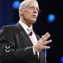

 I was born in Plainview, NY in the year 1978. COming from a New York family I was born and raised a die hard Yankee fan. My father even hung a poster over my bed of Yankee legends and I was to call out their names by jersey number before bed everynight. Shortly after I turned five years old the family moved all the way to South Florida where we were raised on the west coast in a town called Cape Coral. My sister was always one higher grade school than me so when she finished high school and I middle school our parents moved us to the east coast of Florida to Boca Raton. Here is where I graduated high school and attened my first college courses.
While struggling through prerequisites for pharmacy school I had the opportunity to open and run my own retail pharmacy. I opened my pharmacy in the year 2009 in the city of Boynton Beach. I am still currently the sole owner and operator of Neighborhood Pharmacy in 2019. I have currently started a Bootcamp program in the fine institution of UCF. My goal is to join the workforce working in the web development community as well being an enhancer in my own industry.